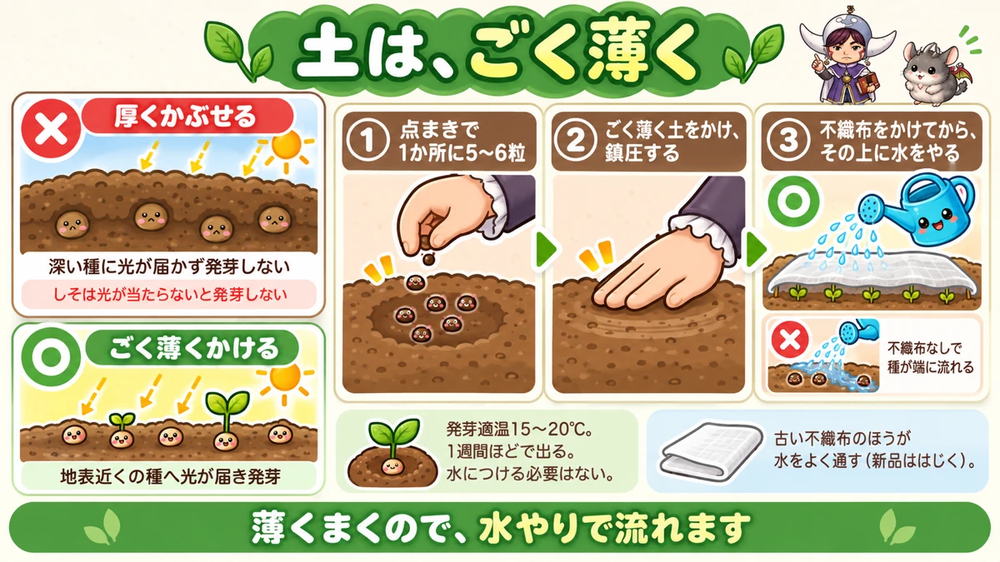
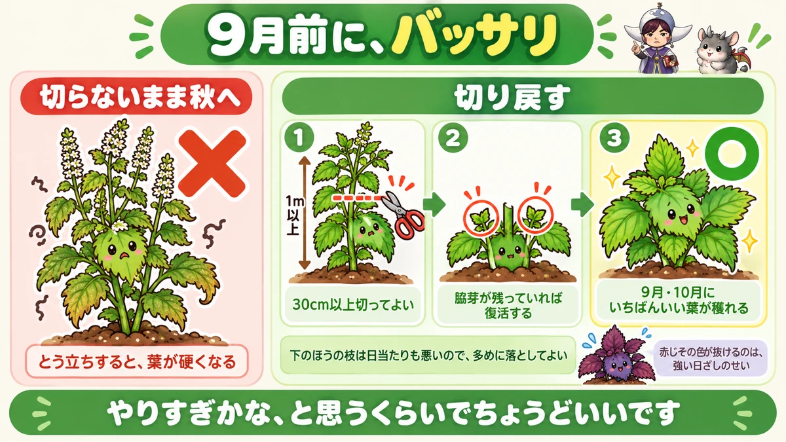
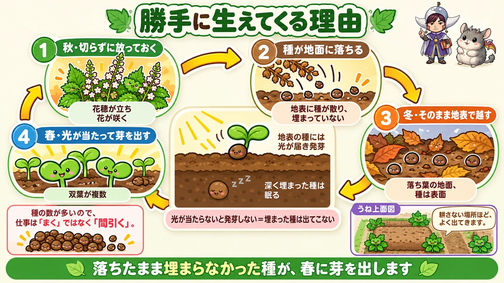

しそは、こぼれ種で毎年生えてきます🌿 買うのは最初の1袋だけ
🌿「まいたのに、ほとんど芽が出なかった」
🌿「秋になったら、葉が硬くて食べられない」
🌿「スーパーで10枚150円くらいで買っている」
どうも、8150（えいこう）です🌱 家庭菜園歴8年、理科の教員免許を持っていて、有機・無農薬で野菜を育てています。
前回はマルチの話でした。今日はしそ（大葉）です。
しそは家庭菜園でいちばん「元が取れる」野菜だと思っています。
買えば10枚で百数十円。畑にあれば、夏じゅう好きなだけ穫れます。
先に、この記事でいちばん言いたいことを言っておきますね。
しその種は、光が当たらないと芽が出ません。
だから深く埋めると失敗します。そして地面に落ちた種は、翌年ひとりでに生えてきます🌿
まず、しその基本データ
3つだけ押さえてください
- 科：シソ科（バジル・ミントの仲間。連作にわりあい強い野菜です）
- タネまき：4月中旬〜5月上旬
- 収穫：7月〜10月
※時期は中間地（関東〜関西の平野部）が目安。寒い地域は少し遅らせ、暖かい地域は早めに。
肥料は、ほとんど要りません
ここが助かるところです。
しそは、やせた土でも育ちます。
最初に1平米あたり、牛ふん堆肥を1Lほどと、鶏ふんを少し。それで数年は何も入れなくて大丈夫です。
むしろ、入れると悪くなります
これは知っておいてください。
肥料が多いと、えぐみが出ます。
そして虫が寄ってきます。葉物と同じで、やわらかく茂った葉はごちそうなんですね。
「育ちが悪いから追肥」を、この野菜ではやらないでください。
深く埋めると、芽が出ません

光が要る種です
前にタネまきの記事で、「光が当たらないと出にくい種がある」と書きました。
しそが、まさにそれです。
だから土は、ごく薄くかけるだけにします。
薄いと、今度は流れます
ここでジレンマが起きます。
覆土が薄いので、水やりで種が流れるんです。
私も最初、じょうろの水で種が全部端に寄ってしまいました😅
不織布を、先にかける
解決策は簡単です。
種をまいて鎮圧したら、先に不織布をかける。その上から水をやります。
こうすれば水がやわらかく落ちて、種が動きません。
古い不織布のほうが、いいです
これは意外なコツです。
新しい不織布は水をはじきます。上からかけても、なかなかしみ通りません。
使い古したもののほうが、水をよく通します。
新品しかないときは、時間をかけてゆっくりやってください。
まき方の目安
- 点まきで、1か所に5〜6粒
- 発芽適温は15〜20℃
- 冷え込まなければ、1週間ほどで芽が出ます
- 水につけてからまく必要はありません（殻は硬くない種です）
余った種は、芽じそに
しその種は、1袋にたくさん入っています。毎年、必ず余ります。
そこで余った分をプランターにばらまいてください。
出てきた双葉が芽じそです。刺身に添えたり、サラダに散らしたり。
間引き菜も同じように食べられます。捨てるところがありません。
9月前に、バッサリ切ります

夏を越すと、こうなります
真夏の猛暑を通ると、しそはこうなります。
- 葉がチリチリになる
- 新しい葉が小さい
- 味が薄い
- 香りが弱い
このまま秋に入ると、すぐ花が咲きます。そうなると葉は硬くて食べられません。
切り戻すと、戻ります
そこで切り戻しをします。
なすの更新剪定と同じ考え方です。枝を短く切って、脇芽に出直してもらいます。
思っているより、切ります
ここが大事なところです。
1m以上に伸びた枝なら、30cm以上切ってしまって構いません。
下のほうの枝は日当たりも悪いので、多めに落としてください。
「やりすぎたかな」と思うくらいでちょうどいいです。脇芽が残っていれば、必ず復活します。
2週間で、柔らかい葉が出ます
切ったあとは、脇芽から新しい枝が伸びてきます。
そこに出る葉はみずみずしくて、香りも戻っています。
9月・10月に、いちばんいい葉が穫れるようになります。
切った葉も、使えます
切り落とした枝の葉は、まだ食べられます。
食べきれない分は、うねに敷いてください。
乾燥よけになりますし、そのまま土に還ります。
赤じその、色の話
赤じそを育てている方へ。
夏の強い日ざしに当たると、赤味が抜けて青くなることがあります。
これは傷んだわけではありません。切り戻せば、また赤い葉が出てきます。
うねの隅に、点々と植える
香りが、虫を遠ざけます
しそは、他の野菜のそばに植えると役に立ちます。
あの強い香りを、虫が嫌います。
きゅうりやかぼちゃ（ウリ科）、トマトやなす（ナス科）のうねの隅に植えてみてください。
植えすぎないこと
ただし1株が大きくなります。
2mおきに1株くらい、うねの角や隅に点々と。これで十分です。
真ん中に植えると、あとで邪魔になります。
しそも、食べられます
万能ではありません。
ヨトウムシは、しそも食べます。
夜のうちに葉に穴が開いていたら、株元の土を少し掘ってみてください。丸まった幼虫がいます。
学ぶ：だから、勝手に生えてくるんです🔬

毎年、同じ場所に出てきます
しそを一度育てた方は、経験があると思います。
翌年の春、植えていないのにしそが出てくる。
しかもだいたい去年と同じあたりに出ます。
種は、地面に落ちています
仕組みは単純です。
秋に切り戻さず放っておくと、しそは花を咲かせて、種を作ります。
その種がそのまま地面に落ちます。
ここで、話がつながります
さて、記事の前半を思い出してください。
しその種は、光が当たらないと芽が出ませんでした。
ということは、こうなります。
- 地面に落ちたまま、埋まらなかった種 → 春に光が当たって、発芽する
- 深く耕して埋めてしまった種 → 出てこない
「勝手に生えてくる」のは、好光性種子だからなんですね。
耕さない場所ほど、出ます
だから、こういうことが起きます。
うねの隅や通路ぎわなど、あまり耕さない場所ほど、しそがよく出てきます。
私の畑では毎年ほぼ同じ角に出てきます。もう自分でまいたことがありません。
ただし、多すぎます
いいことばかりではありません。
花1本から落ちる種の数が、とにかく多いです。
放っておくとびっしり生えて、他の野菜の場所を奪います。
だから仕事は「まくこと」ではなく「間引くこと」になります。ぜいたくな悩みですが、これは本当です☺️
まとめ
ここまで読んでくださって、ありがとうございます！
- しそはシソ科。連作にわりあい強い
- タネまきは4月中旬〜5月上旬、収穫は7月〜10月
- 肥料はほとんど要らない。最初に少しで数年もつ
- 肥料が多いとえぐみが出て、虫が寄る
- 好光性種子なので、覆土はごく薄く
- 薄いぶん種が流れるので、不織布をかけてから水やり
- 古い不織布のほうが水をよく通す
- 点まきで1か所5〜6粒。発芽適温15〜20℃
- 余った種はばらまいて芽じそに
- 9月前に切り戻す
- 1m伸びた枝なら30cm以上切ってよい
- 脇芽が残っていれば必ず復活する
- 切ったあとは柔らかい葉が出て、秋まで穫れる
- 赤じその色が抜けるのは日ざしのせい
- ウリ科・ナス科のうねの隅に2mおきに植える
- ヨトウムシはしそも食べる
- こぼれ種が翌年生えるのは、好光性種子だから
- 仕事はまくことではなく、間引くこと
全部やろうとしなくて大丈夫です。まずは今ある株を、思いきって半分に切ってみてください。2週間後に、別の野菜みたいな葉が出てきます🌿
次回は、しょうがの話です。収穫まで待てない人のための、途中で穫る方法をお話しします🌱
防虫ネット
しそはバッタに食われます。柔らかい葉を穫りたいなら、かけておくほうが確実です。
![[商品価格に関しましては、リンクが作成された時点と現時点で情報が変更されている場合がございます。]](https://hbb.afl.rakuten.co.jp/hgb/56bc205d.0066fedc.56bc205e.af56d163/?me_id=1260467&item_id=10000299&pc=https%3A%2F%2Fthumbnail.image.rakuten.co.jp%2F%400_mall%2Fmarsol-morishita%2Fcabinet%2Fshouhinn%2Fbouchuu%2Fimgrc0090950099.jpg%3F_ex%3D240x240&s=240x240&t=picttext "[商品価格に関しましては、リンクが作成された時点と現時点で情報が変更されている場合がございます。]")

液体肥料
摘み取りながら長く穫るので、薄い追肥を続けると葉が硬くなりません。
![[商品価格に関しましては、リンクが作成された時点と現時点で情報が変更されている場合がございます。]](https://hbb.afl.rakuten.co.jp/hgb/56bc2da1.2bf36c6e.56bc2da2.7b66fad7/?me_id=1347284&item_id=10000008&pc=https%3A%2F%2Fthumbnail.image.rakuten.co.jp%2F%400_mall%2Fmandahakko%2Fcabinet%2Fsyokubutsumanda%2F260306_smn_amn5004.jpg%3F_ex%3D240x240&s=240x240&t=picttext "[商品価格に関しましては、リンクが作成された時点と現時点で情報が変更されている場合がございます。]")
プランター
こぼれ種で増えすぎるので、畑よりプランターのほうが管理しやすい野菜です。

あわせて読みたい